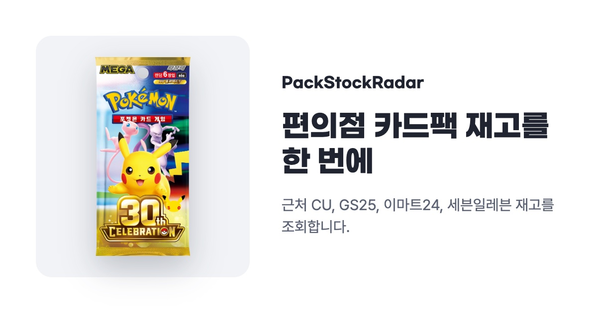
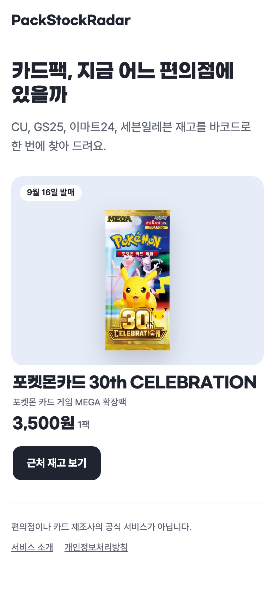
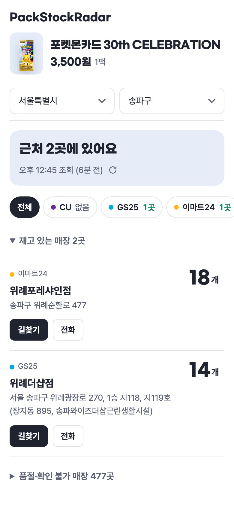

무료 웹사이트 · 설치·가입 없음
포켓몬카드, 어느 편의점에 있지?
편의점 4곳 재고를 한 번에
새 카드팩이 나오면 편의점 앱 네 개를 번갈아 열어 봐야 합니다. PackStockRadar는 CU · GS25 · 이마트24 · 세븐일레븐 재고를 한 화면에 모아 보여 줍니다.

재고 조회하러 가기카드팩 고르고, 지역 고르면 끝


내 위치를 쓰거나 시/도 · 시/군/구를 직접 고르면 그 구 안의 편의점 매장 재고가 가까운 순으로 나옵니다. 재고 있는 매장은 수량과 함께 맨 위에 나오고, 바로 길찾기나 전화로 이어집니다.
이름이 달라도 같은 상품으로 찾습니다
같은 카드팩도 편의점마다 상품명이 다릅니다.
- CU 포켓몬)30주년기념카드
- 이마트24 포켓몬)포켓몬카드(30주년셀레브레이션)
그래서 이름 대신 상품 바코드로 조회합니다. 검색어를 바꿔 가며 찾을 필요가 없습니다.
이런 분께 맞습니다
- 새 확장팩 발매일에 근처 편의점을 돌아다니는 분
- 편의점 앱 네 개를 깔고 싶지 않은 분
- 아이가 찾는 카드팩을 퇴근길에 사 가려는 분
💡 수량이 정확한가요?
편의점 앱의 재고 정보를 그대로 가져옵니다. 같은 지역은 10분 동안 같은 결과를 보여 주므로, 방문 전에 매장에 전화로 확인하면 확실합니다.
💡 "확인 불가"가 나와요
편의점 서버 사정으로 일부 재고를 받지 못한 경우입니다. 잠시 뒤 다시 조회해 주세요.
💡 돈 드나요?
아니요. 앱 설치도 회원가입도 없습니다.
PackStockRadar는 편의점이나 카드 제조사의 공식 서비스가 아닙니다.